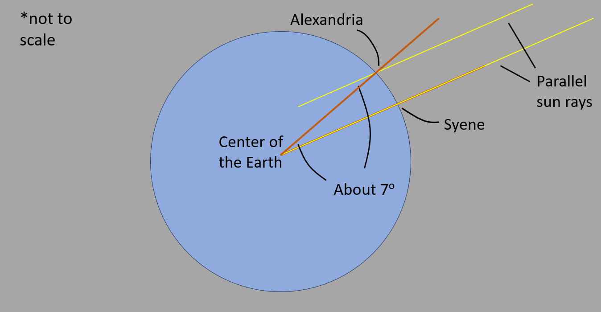

Eratosthenes of Cyrene was a Greek polymath: a mathematician, geographer, poet, astronomer, and music theorist. He was a man of learning, becoming the chief librarian at the Library of Alexandria.[1]
Eratosthenes was told that on the first day of summer at Syene, Egypt (near modern Aswan), sunlight struck the bottom of a vertical well at noon. This indicated that the Sun was directly over the well - meaning that Syene was on a direct line from the center of Earth to the Sun.[2]
At the corresponding time and date in Alexandria, Eratosthenes observed the shadow a column made and saw that the Sun was not directly overhead, but was slightly south of the zenith.[2] He then measured the Sun's angle of elevation at noon in Alexandria by using a vertical rod and measuring the length of its shadow on the ground. Using the length of the rod, and the length of the shadow, as the legs of a triangle, he calculated the angle of the sun's rays. This turned out to be about 7°, or 1/50th the circumference of a circle.[1]
Taking the Earth as spherical, and knowing both the distance and direction of Syene, he concluded that the Earth's circumference was fifty times that distance[1]. He made five important assumptions (none of which is perfectly accurate):
Pharaonic bookkeepers gave a distance between Syene and Alexandria of 5,000 stadia (a figure that was checked yearly). Some historians say that the distance was corroborated by inquiring about the time that it took to travel from Syene to Alexandria by camel.[1] Eratosthenes later rounded the result to a final value of 700 stadia per degree, which implies a circumference of 252,000 stadia.[1]
The stadion, formerly also anglicized as stade, was an ancient Greek unit of length.[3] The stadion (plural = stadia) was a common distance unit of the time. Unfortunately, there was not a universal, standard length for the stadion; so we don't know exactly which version of the stadion Eratosthenes used, and therefore are not exactly sure how accurate his solution was.[4] Some claim Eratosthenes used the Olympic stade of 176.4 m, which would imply a circumference of 44,100 km, an error of 10%, but the 184.8 m Italian stade became (300 years later) the most commonly accepted value for the length of the stade, which implies a circumference of 46,100 km, an error of 15%.[1]
Sources: